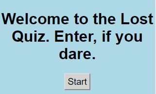

Quiz App
This was the very first proper project with the Thinkful Engineering Immersion Course. It's an App where no HTML elements are allowed; just about everything needs to be rendered. This crux of this project was to demonstrate ability with recently learned jQuery and event listeners. My quiz is on the ABC Lost television show that ran from 2004 to 2010. I adored it as a teen, but that's besides the point; there weren't any points for style or taste after all.
 Github Link
Github Link

Live Website Link